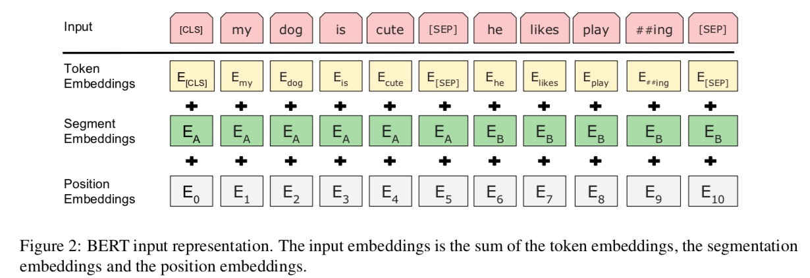

最近看到BERT模型各个公众号都在推送，但是对于BERT的解读资料目前稍显不足，而且BERT的发展历程目前缺乏一个详细的解释，我这里抛砖引玉，总结一下BERT相关的论文，权当做个笔记。
BERT的Background
BERT是用来做什么呢？
谷歌的目标是期待能够打造图像领域的ImageNet, 我们知道现在CV领域的一些任务都一般不是从零开始，而是在ImageNet这些预训练好的模型上微调。但是NLP上尚未有这样公认的ImageNet的存在。这里写一下NLP如果采用ImageNet这样的形式它的upper-stream task 和 down-stream task 是什么
| task | 数据 | 目标 |
|---|---|---|
| upper-stream task | 非常大的语料，理论上越大越好 | 得到一个general, good, robust 的语言表示 |
| down-stream task | 就是特定任务的语料 | 解决特定task, 譬如sentiment analysis, question answering |
| BERT 目标是处理down-stream task, i.e.,得到一个语言表示模型(language representation model), 或者说是 “pre-trained language representations”。 从这个意义上来讲，我们之前用的Word2Vec 或者 GloVe 其实也是预先训练好的”WORD-LEVEL”的表达。目前，将pre-trained language representations 应用到下游任务(down stream task)中有两种方式, | ||
| + feature-based | ||
| feature-based 典型代表有ELMo (2018年NAACL Best Paper),将这些 representation作为新的features加入到 task-speacific architecture中 | ||
| + fine-tunning | ||
| 典型代表: OpenAI GPT。直接在预训练好的模型上利用 task-specific 数据fine tune |
为什么会出现BERT
- 在Word2Vec和GloVe中，一个词无论在任何语境下都是一个向量，显然这不是完美的。“温暖的 阳光 照射在 我身上” “他的 话 很 温暖”，显然这里的“温暖” 如果是一个向量来表示显然不太精确，我们期待一个向量能够融入上下文信息(Context), ELMo 抓住了这一痛点，提出了一种新的Word Embedding 方法。
- 尽管ELMo出现了，但是其出现仍然是希望能够代替Word2Vec,学到一个更加具有(context) 信息的Word Embedding, 然而，对于一些复杂的任务，有些逻辑更复杂(dialogue之类的)，一个好的Embedding 可能还不够。
- BERT希望能够在预训练模型上就能捕捉到很复杂的关系: 上下文逻辑、语料场景等
BERT 之前需要有的知识储备
- LSTM基本知识(本文不讲)
- Attention机制的理解 (参考我的专门的博客Attention机制)
- Self-Attention: Self-Attention 就是BERT提到的Transformer，是现在非常流行的基本组件(Block), 最好能理解的十分深入,这里也单独开一个博文
谷歌选择的方法-BERT
预训练模型
首先BERT选择了fine-tune的思路,也就是通过做upper-stream task来pre-train一个模型, 然后微调。在预训练时， BERT采用了两个目标
Masked Language Model
+目前学术界在upper-stream 这个任务上，也就是在学general language representation时候，都选择Unidirectional Language Model, 原因在于这种单向的结构在进行预训练时候，只能在当前位置之前的词汇中做Self-Attention操作
The major limitation is that standard language models are unidirectional, and this limits the choice of architectures that can be used during pre-training. For example, in OpenAI GPT, the authors use a left-to-right architecture, where every token can only attend to previous tokens in the self-attention layers of the Transformer.
BERT不用Unidirectional Language Model 而采用全新的任务 Masked Language Model, 其实就是英文考试常考的 “Cloze Task(完形填空)”。这个怎样理解: 譬如BERT想要得到一个NLP能力很强的预训练模型，完形填空相当于没一个空格都需要你去靠自己的NLP能力去补充上去，因此，我们可以对整个语料库随机遮住 15% 的tokens，这些被遮住的部分记为[MASK], 然后去将这些[MASK] 重新预测为真实词语。但是这样也存在问题
- Pre-train 和 fine-tune 阶段目标函数不一致
毕竟在Pre-train时候，存在[MASK], 而在fine-tune 阶段真实NLP任务中是没有[MASK] 存在的
解决方案:- 80% 的情况下选择的词语就是替换成[MASK] E.g.: A cat is walking.–> A cat [MASK] walking.
- 10% 的情况下: 选择的词语随机替换成一个词语 E.g>: A cat is walking –> A cat good walking.
- 10 的情况下: 选择的词语还是替换成原来的词语 E.g., A cat is walking –> A cat is walking.
分析一下，这里在做什么
The Transformer encoder does not konw which words it will be asked to predict or which have been replaced by random words, so it is forced to keep a distributional contextual representation of every input token
- 因为只有15% 的token 被预测，而在Unidirectional Language Model 中所有的token都会被预测，显然Masked Language Model效率是很低的。
Next Sentence Generation
Masked Language Model 更多的还是学到的一种句内关系，为了能学到句间关系(譬如Question Answering等任务依赖句间关系)，引入 Next Sentence Generation 任务。注意，这里的任务不是完全生成下一个句子，而是做分类任务。
1 | Input: [CLS] the man went to [MASK] store [SEP] he bought a gallow [MASK] milk [SEP] |
BERT的训练方法
为了方便理解: 我从 Input, Output, Model Structure, Loss Function 来讲这个问题。
Input
- Token Embedding: 就是最常见的Word Embedding, 注意[CLS]是指的一个分类标签，是为了分类任务存在的
- Segment Embedding: 针对一些对话语料 A代表第一句，B代表第二句
- Position Embedding: 因为BERT是基于Transformer建立的,而Transformer不像RNN， Transformer是没有位置信息的，因此需要Position Embedding 来额外的表示位置信息
最后Input就是： $\text{Input} = \text{Token Embedding} + \text{Segment Embedding} + \text{Position Embedding}$
Output
譬如我们的Input是“My dog is cute, he likes play leaves.” 我们挖空了 “cute”, 也就是将”cute”替换成了”MASK”, 那么现在我们Transformer的Input就是 “My dog is [MASK], he likes play”output就是 “cute”
down-strem 任务如何接入？
总的想法
就是很多NLP上的任务可以重新思考一下，谷歌其实在避免一种倾向,这种倾向是
NLP的各个任务越来越专，针对特定任务设计的模型越来越复杂，网络层数越来越深，各种Attention
我这里没有资格评价这种倾向好或者不好。但是谷歌就是反其道而行，证明了
我这里搭建一个十分General的基础BERT，在BERT的基础上，针对特定任务，一个很简单的小修小补就足以解决问题
当然，谷歌也出了很多在特定任务上十分impressive 的work。。
谷歌的模型，越来越证明产业界的学术潜力，产业界大手笔，大计算能力，大资源，服气!!!
除此之外，谷歌已经将模型开源BERT代码模型开源